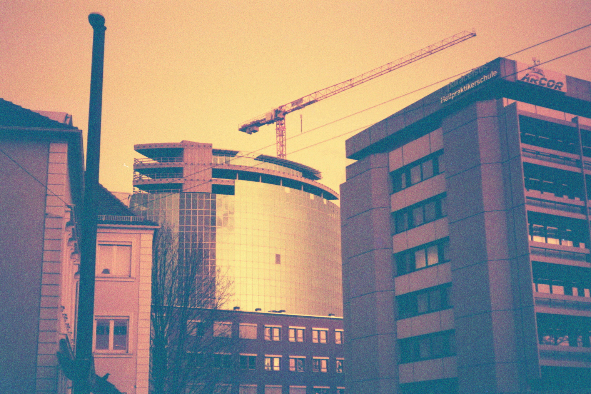
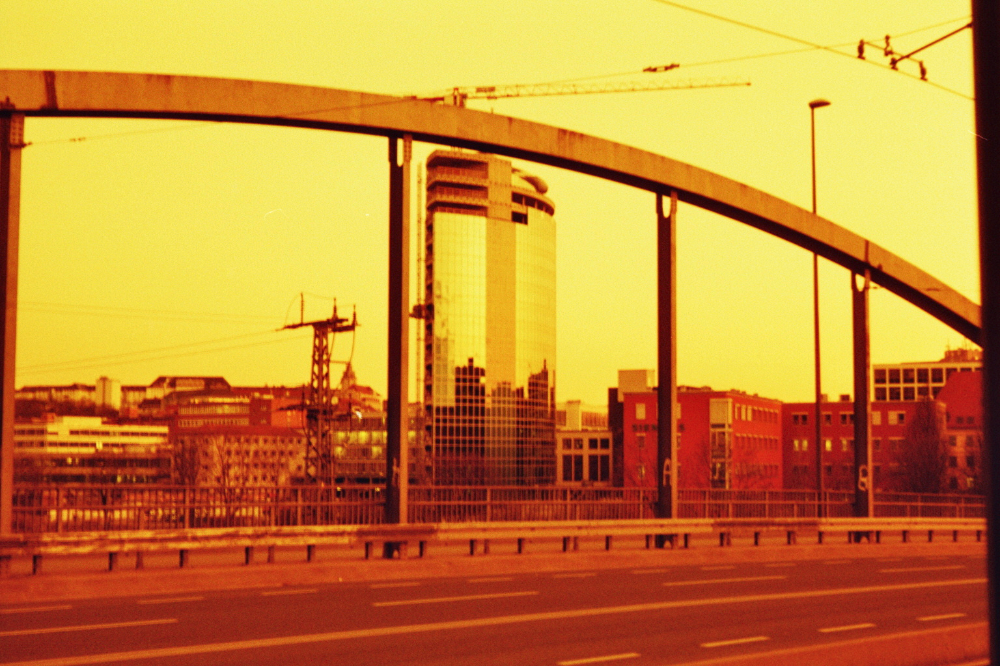
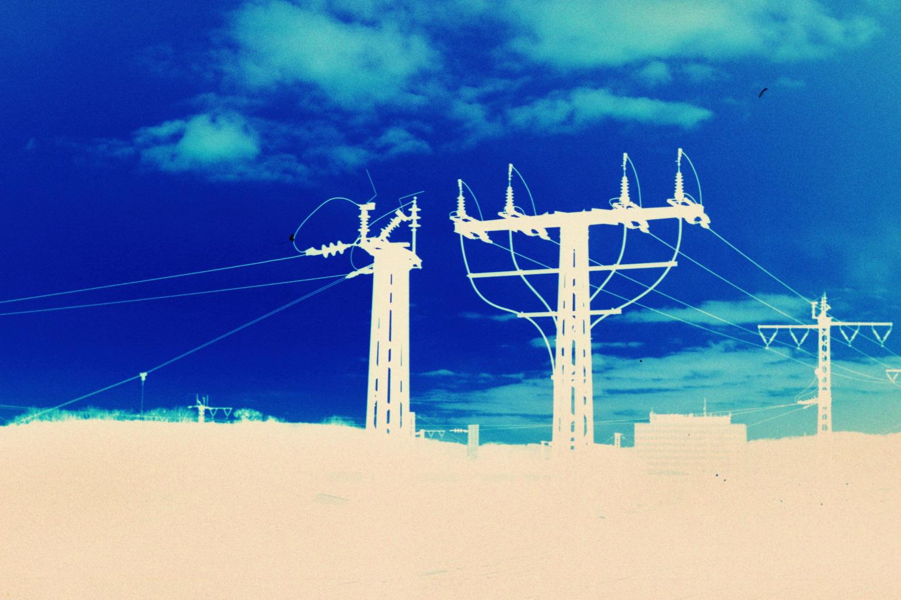
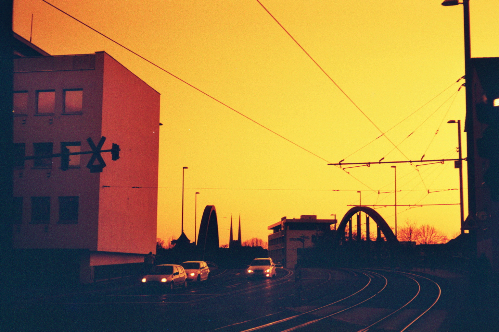
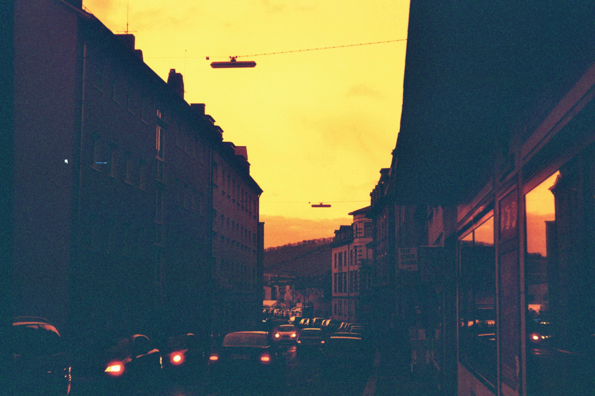

Retro Futurism takes you on a journey back to spilled dreams of the 2010s

What was the future like?

It was some kind of yellow

Sometimes it felt inverted

Sometimes it felt like it was the horizon...

...We were on the road
Sometimes one needs the do one step back, to understand how things work. I mean this is life. You never know what you get. But it's possible to bring things together and gain deeper understanding.
-Unknown, likely human
Let's connect! Tell us who your future looked like!